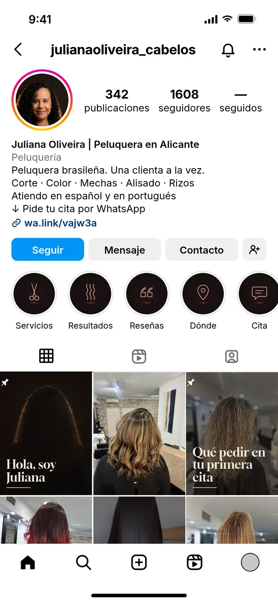
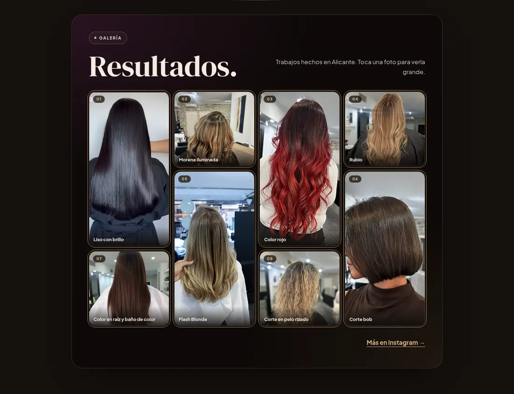
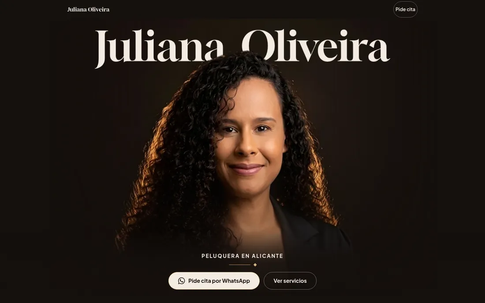
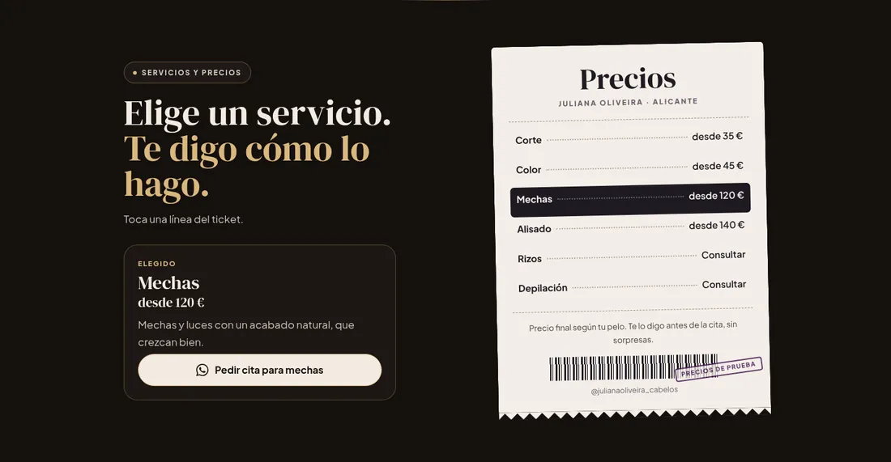
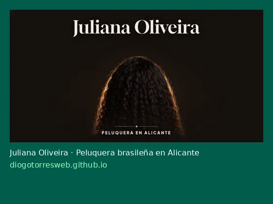

1 · Ouvir
Comecei pelo que você já faz
Olhei o seu Instagram, o TikTok, o curso e o que as suas clientes escrevem. Uma frase se repete: «por fin encontré mi peluquería en Alicante».

2 · Escolher
Separei o que é seu de verdade
Só trabalhos feitos em Alicante, de costas, sem rosto de cliente. Nenhuma foto de banco.

3 · Desenhar
Uma cara só sua
Preto quente, ameixa e um fio dourado. O seu nome em letra elegante. A mesma cara no site, no Instagram, no YouTube e no Google.
4 · Construir
O site, no celular e no computador
A cliente vê os seus resultados primeiro, escolhe o serviço e já cai no seu WhatsApp com a mensagem pronta.

5 · Ajustar com você
Estamos aqui
Agora entram os seus detalhes. O ticket de preços está com valores de teste, para você trocar pelos seus.

As peças
Capa do YouTube Perfil no Google Link do site no WhatsApp Destaques do Instagram
Tudo junto, lado a lado

6 · Publicar
O que falta de você
Com isso, o site pode ir ao ar no seu nome.
- Os seus preços «desde» de cada serviço
- Onde atende e o horário
- Autorização das clientes que aparecem nas fotos e nas opiniões
- Uma foto sua trabalhando
- Os seus dados para o aviso legal